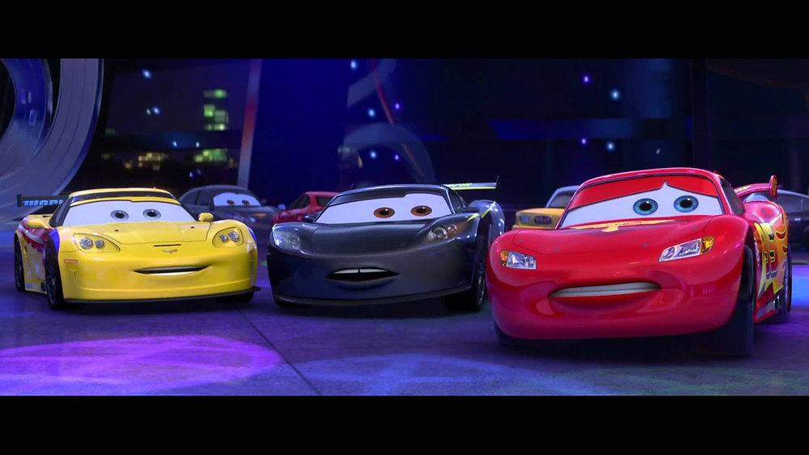

Cars 3
Una nueva generación de corredores

Cars 3 es la tercera película de la saga de Disney y Pixar, estrenada en 2017. En esta historia, Rayo McQueen se enfrenta a uno de los mayores desafíos de su carrera.
Los nuevos automóviles de carreras utilizan tecnología avanzada y entrenamientos modernos. Rayo tendrá que demostrar que la experiencia, la disciplina y la pasión siguen siendo importantes dentro de las competencias.
Ficha técnica
2017
Pixar Animation Studios
Walt Disney Pictures
Brian Fee
Animación, aventura y comedia
Sinopsis completa
Después de muchos años siendo uno de los corredores más importantes de la Copa Pistón, Rayo McQueen comienza a enfrentarse a una nueva generación de automóviles más rápidos y tecnológicos.
Entre ellos se encuentra Jackson Storm, un corredor que representa un gran reto para Rayo. Después de una competencia difícil, Rayo comprende que necesita cambiar su manera de entrenar.
En ese momento conoce a Cruz Ramírez, una entrenadora que lo ayuda a prepararse y recuperar la confianza. Juntos descubren que aprender de los demás puede abrir nuevas oportunidades.
Rayo también recuerda las enseñanzas de Doc Hudson y comprende que el legado de un campeón no consiste solamente en ganar carreras, sino también en inspirar a otros.

Personajes principales

Cruz Ramírez
Es una entrenadora que ayuda a Rayo McQueen a mejorar sus habilidades. También descubre su propio potencial como corredora.

Jackson Storm
Es un corredor moderno que utiliza tecnología avanzada y representa a la nueva generación de competidores.

Doc Hudson
Aunque ya no está presente durante los acontecimientos principales, sus enseñanzas siguen acompañando a Rayo.
El entrenamiento de Rayo McQueen
Durante la película, Rayo descubre que no puede depender únicamente de su velocidad. Necesita trabajar en su técnica, resistencia y capacidad para adaptarse a los cambios.
Cruz Ramírez le presenta nuevas formas de entrenamiento y juntos aprenden que cada experiencia puede convertirse en una oportunidad.
- Aprender nuevas técnicas de carrera.
- Mejorar la confianza personal.
- Adaptarse a los cambios tecnológicos.
- Trabajar en equipo y compartir conocimientos.
Mensajes y enseñanzas
La perseverancia:
Nunca debemos rendirnos cuando aparecen nuevos desafíos.
La experiencia:
Los conocimientos adquiridos con el tiempo tienen un
gran valor.
La superación:
Siempre podemos aprender, mejorar y descubrir
nuevas habilidades.
El trabajo en equipo:
Ayudar a otras personas también es una forma de triunfar.
Curiosidades de Cars 3
Curiosidad 1:
Cars 3 se estrenó en 2017, seis años después de Cars 2.
Curiosidad 2:
Cruz Ramírez tiene un papel muy importante en el
desarrollo de la historia.
Curiosidad 3:
La película aborda el cambio generacional en el
mundo de las carreras.
Explora más de Universo Cars
¿Quieres conocer a todos los automóviles que forman parte de esta increíble historia?
Conocer personajes Volver al inicio